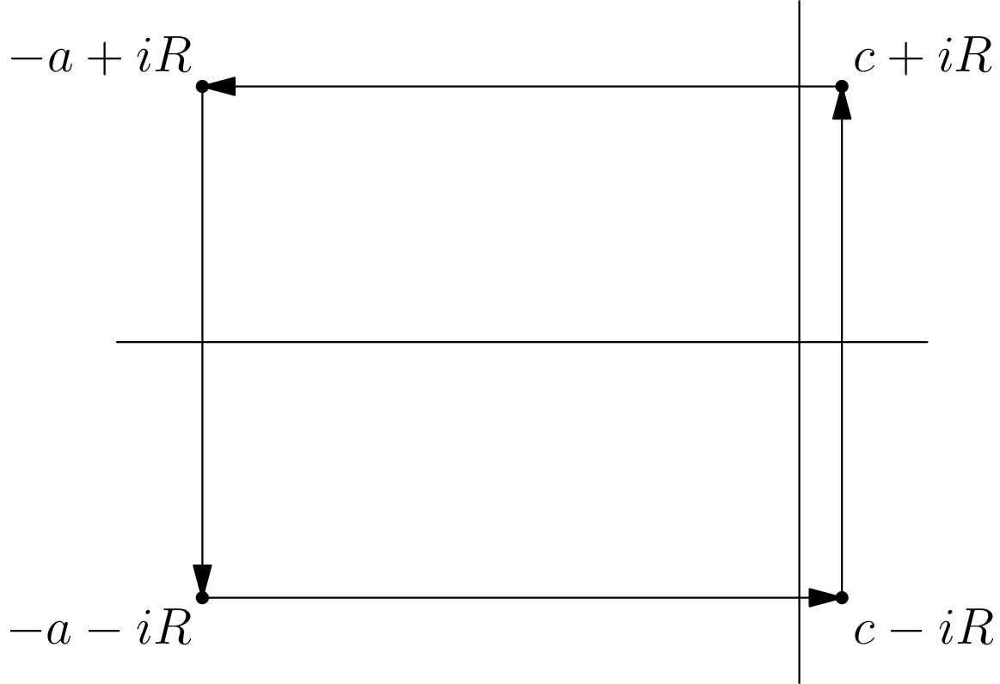

April 22nd
Today I learned an example of contour integration, to build towards the Prime Number Theorem. For the time being, fix $x \gt 1,$ and we are interested in evaluating\[\frac1{2\pi i}\int_{c-iR}^{c+iR}\frac{x^s}s\,ds\]for $c \gt 0$ and $R\to\infty.$ As motivation, this will turn into $1$ as $R\to\infty,$ and we remark that the Cauchy integral formula says\[\frac1{2\pi i}\oint_\gamma\frac{x^s}s\,ds=x^0=1\]for any loop $\gamma$ around the origin. Thus, we can hope to make a contour with the desired integral as one edge and the other sides of vanishing impact.
Here's the contour: fix $-a\in\RR$ very negative, and we move in a rectangle containing the points $c\pm iR$ and $-a\pm iR.$ We call this contour $\Gamma_a,$ and it looks like the following.

The integral around the entire contour should evaluate to $1.$ The right side is the one we are interested in, so we have to show that the remaining sides vanish as $a\to\infty$ and $R\to\infty.$
The top and bottom sides are\[\left|\int_{\text{top or bot.}}\frac{x^s}s\,ds\right|=\left|\pm\int_{-a\pm iR}^{c\pm iR}\frac{x^s}s\,ds\right|\le\int_{-a\pm iR}^{c\pm iR}\frac{\left|x^s\right|}{|s|}\,ds.\](The $\pm$ at the front is due to the direction of integration.) We can bound $|s|$ by $R$ because that it is the imaginary part. The numerator we write as $\left|x\right|^s=x^{\op{Re}s}=e^{(\log x)\op{Re}s}.$ Because we now only care about the real part, we might as well integrate from $-a$ ro $c,$ so this we are bounding by\[\left|\int_{\text{top or bot.}}\frac{x^s}s\,ds\right|\le\int_{-a}^{c}\frac{e^{(\log x)\sigma}}R\,d\sigma.\]This integral evaluates to $\frac1R\left(x^c-x^{-a}\right),$ which is $O(1/R)$ as $a\to\infty.$
As for the left side, we bound it similarly by\[\left|\int_{\text{left}}\frac{x^s}s\,ds\right|=\left|\int_{-a+iR}^{-a-iR}\frac{x^s}s\,ds\right|\le\int_{-a+iR}^{-a-iR}\frac{\left|x^s\right|}{|s|}\,ds.\]For sufficiently large $a$ (more precisely, $a \gt R$), we can bound $|s|$ by $R.$ Combining this with $\left|x^s\right|=x^{\op{Re}s}=x^{-a},$ this evaluates to\[\left|\int_{\text{left}}\frac{x^s}s\,ds\right|\le\int_{-a+iR}^{-a-iR}\frac{x^{-a}}R\,ds=2ax^{-a}.\]As $a\to\infty,$ this will vanish.
In total, we have that\[2\pi i=\int_{\Gamma_a}\frac{x^s}s\,ds=\int_{\text{right}}\frac{x^s}s\,ds+\int_{\text{top}}\frac{x^s}s\,ds+\int_{\text{left}}\frac{x^s}s\,ds+\int_{\text{bot.}}\frac{x^s}s\,ds.\]As we send $a\to\infty,$ the right integral vanishes, and the top and bottom integrals are $O(1/R).$ So we have that\[\int_{\text{right}}\frac{x^s}s\,ds=2\pi i+O(1/R).\]In particular, we have proven the following.
Proposition. For $x \gt 1,$ we have that \[\frac1{2\pi i}\int_{c-i\infty}^{c+i\infty}\frac{x^s}s\,ds=1,\] where the integral is the Cauchy principal value.
This follows from the above discussion, by noting that taking $R\to\infty$ in\[\frac1{2\pi i}\int_{c-iR}^{c+iR}\frac{x^s}s\,ds=1+O(1/R)\]gives the needed result. $\blacksquare$
We will not show this in detail here, but we will write down the other side of this claim.
Proposition. For $0 \lt x \lt 1,$ we have that \[\frac1{2\pi i}\int_{c-i\infty}^{c+i\infty}\frac{x^s}s\,ds=1,\] where the integral is again the Cauchy principal value.
This is done by pretty much repeating the above estimates with $\Gamma_a$ defined by the rectangle with corners $c\pm iR$ and $a\pm iR$ for very positive $a.$ In particular, the integral picks up no roots, so the entire integral vanishes over the contour. The added sides of the rectangle vanish as $a,R\to\infty.$ $\blacksquare$
Of course, we've left a whole at $x=1,$ which doesn't fall to contour integration tricks very easily. For example, using the $\Gamma_a$ rectangle from the $x \gt 1$ argument will find that the left side doesn't actually vanish as $a\to\infty.$
However, it turns out that we can just evaluate directly. For large $R\in\RR,$ we are interested in\[\int_{c-iR}^{c+iR}\frac{ds}s=\int_{-R}^R\frac{db}{c+bi}.\]To avoid having to deal with the complex logarithm, we complete the square to make this integral\[\int_{c-iR}^{c+iR}\frac{ds}s=\int_{-R}^R\frac{c-bi}{c^2+b^2}\,db=\int_{-R}^R\frac c{c^2+b^2}\,db-i\int_{-R}^R\frac b{c^2+b^2}\,ds.\]The second integral is of an odd function, so it vanishes. The first integral simplifies to\[\int_{-R}^R\frac1{1+(b/c)^2}\,\frac{db}c=\int_{-R/c}^{R/c}\frac1{1+u^2}\,du=\arctan(u)\bigg|_{-R/c}^{R/c}.\]As $R\to\infty,$ this looks like $\frac\pi2–\frac\pi2=\pi.$ Putting this all together, we get the following.
Proposition. We have that \[\frac1{2\pi i}\int_{c-i\infty}^{c+i\infty}\frac{ds}s=\frac12.\]
The above discussion shows that\[\int_{c-iR}^{c+iR}\frac{ds}s=2i\arctan\left(\frac Rc\right).\]Taking $R\to\infty$ tells us that the integral is $\pi i,$ and then dividing by $2\pi i$ gives the result. $\blacksquare$